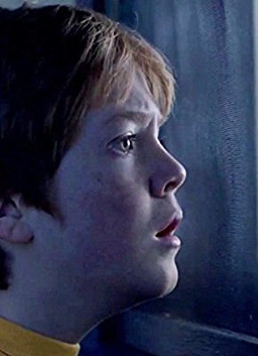
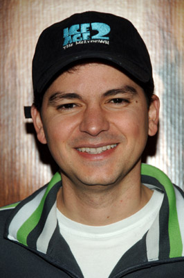
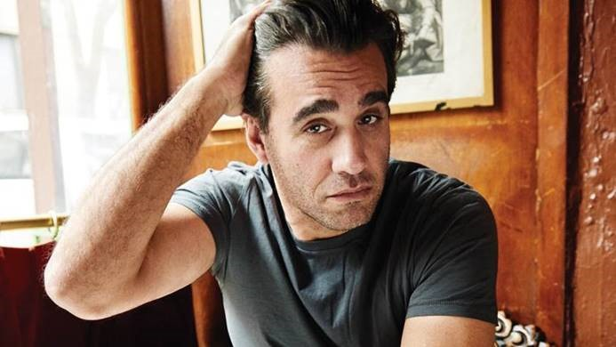
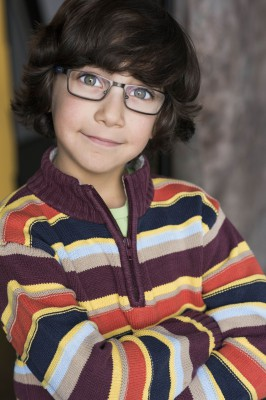

#8349 Ferdinand - Geht STIERisch ab
Auszeichnungen: für 1 Oscars nominiert

 IMDB-Wertung: 6.7 / 10
IMDB-Wertung: 6.7 / 10  Metascore: 58
Metascore: 58 
Ferdinand erzählt die Geschichte eines riesigen Stiers mit einem großen Herzen. Nachdem man Ferdinand irrtümlich für ein wildes Tier hält, wird er gefangen genommen und von zu hause weggeschafft. Fest entschlossen zu seiner Familie zurückzukehren, trommelt er ein Team von Außenseitern für das ultimative Abenteuer zusammen. Ferdinand beweist bei der in Spanien angesiedelten Geschichte, dass man einen Stier nicht nach seinen Hörnern beurteilen kann.
Jahr: 2017
Dauer: 108 Minuten
FSK: 0
Land: USA Studio: Twentieth Century FoxTonspuren:
Untertitel: Deutsch,
Auflösung: 1080p (1920x808) Größe: 5027 MB
Genre: Komödie, Abenteuer, Fantasy, Animation/Trick, Familie
Regisseur: Carlos Saldanha
Drehbuch: Munro Leaf
Soundtrack: John Powell
Darsteller:
-  Jack Gore als Young Valiente
- Jet Jurgensmeyer als Young Guapo
-  Carlos Saldanha als Screaming Matador / Additional Voices
- Jeremy Sisto als Ferdinand's Father
-  Bobby Cannavale als Valiente's Father / Valiente
- Raúl Esparza als Moreno
- Luis Carlos de La Lombana als Ranch Hand #1
- Juanes als Juan
- Jerrod Carmichael als Paco
- John Cena als Ferdinand
 Jordi Caballero als Balloon Vendor / Additional Voices
Jordi Caballero als Balloon Vendor / Additional Voices- Maria Peyramaure als Tall Nun / Additional Voices
- Nazanin Homa als Short Nun / Police Officer #2 / Additional Voices
- Bernardo de Paula als Animal Control Officer / Additional Voices
 Belita Moreno als Shopkeeper
Belita Moreno als Shopkeeper Kate McKinnon als Lupe
Kate McKinnon als Lupe Anthony Anderson als Bones
Anthony Anderson als Bones- Peyton Manning als Guapo
 David Tennant als Angus
David Tennant als Angus Gina Rodriguez als Una
Gina Rodriguez als Una- Daveed Diggs als Dos
- Gabriel Iglesias als Cuatro
- Flula Borg als Hans
- Sally Phillips als Greta
- Boris Kodjoe als Klaus
- Miguel Ángel Silvestre als El Primero
- Carlos Reig-Plaza als Ranch Hand #2 / Additional Voices
- Susana Ballesteros als Newscaster / Additional Voices
- Laura Bayonas als Additional Voices
- Anna Clols als Additional Voices
- Susana G. Esteban als Additional Voices
- Adrian Gonzalez als Additional Voices
- Andrea Lareo als Additional Voices
- Andre Robinson als Additional Voices
-  Carter Sand als Additional Voices
- Julian Zane als Additional Voices
- Nile Diaz als Young Bones
- Colin H. Murphy als Young Ferdinand
- Julia Scarpa Saldanha als Young Nina
- Lily Day als Nina
- Rafael Scarpa Saldanha als Ice Cream Boy
- Karla Martínez als Village Mother
- Andreas A. Esparza als Police Officer #1 / Additional Voices
- James Palumbo als Village Tourist / Additional Voices
- Tim Nordquist als Maquina / Additional Voices
- Alvaro Mendoza als Ranch Hand #3
- Cindy Slattery als Bunny / Additional Voices
- Jason Fricchione als Madrid Tourist / Additional Voices
- Ana Patricia Gámez als El Primero Fan
- Johnny Gidcomb als Additional Voices
Datei: X:\Kinder Filme (A-F)\Ferdinand - Geht STIERisch ab (2017, FSK0, 1920x808).mkv seit 28.02.2018
Festplatte: Kinder-Filme+Trick
 Es gibt insgesamt 68 Filme in der Gruppe 'Kinder Filme (A-F)'
Es gibt insgesamt 68 Filme in der Gruppe 'Kinder Filme (A-F)'